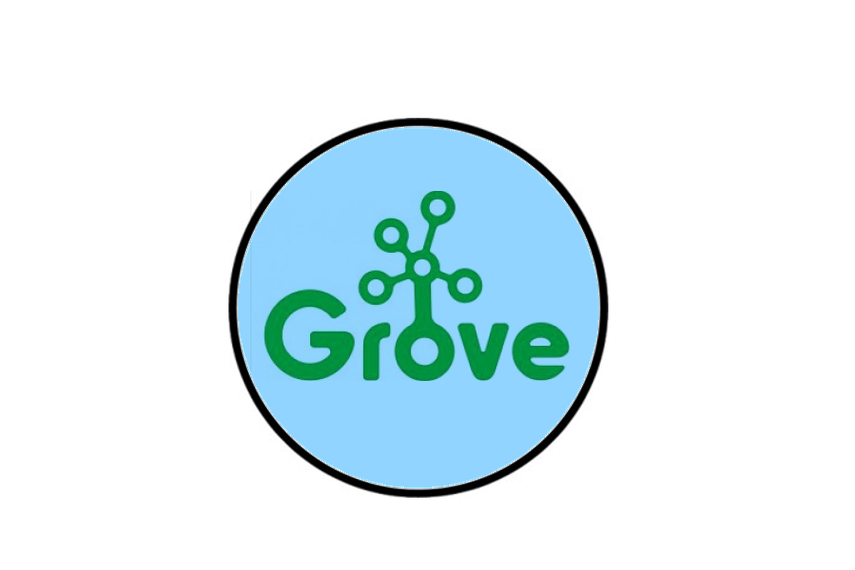

Device is built into a vehicle. Device sensors detect presence of occupant when temperature approaches dangerous levels. Three attempts are made to contact owner via SMS. If owner does not reply, emergency services are contacted with location of the vehicle. There is no interface for this application. Submitted in The IoT for Cities Hackathon at the Internet of Things World Event 2016.